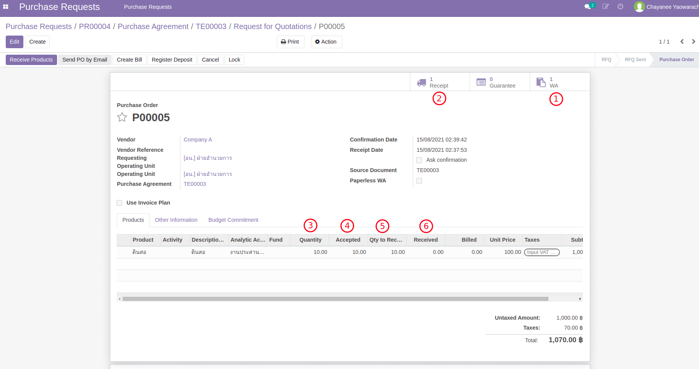
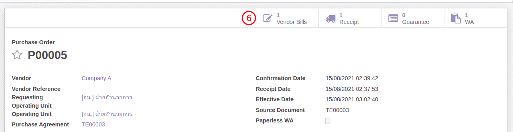
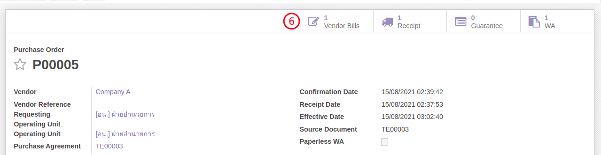

กระบวนการจัดซื้อจัดจ้าง (กรณีมีรับวัสดุ)#
กรณีซื้อวัสดุสำนักงาน จะมีขั้นตอนเกือบทั้งหมดเหมือนกับกรณีไม่ใช่วัสดุ แต่จะมีขั้นตอนเพิ่มเติมคือ
- เพิ่มขั้นตอนระหว่างการสร้างเอกสาร PR โดยจะสามารถเลือกสินค้าที่ต้องการซื้อได้เลย
- ดำเนินการสร้าง TE > RFQ > PO ตามปกติ
- ดำเนินการตรวจรับตามปกติ (WA)
- เพิ่มขั้นตอนการรับสินค้าเข้าคลัง (IN) โดยอ้างอิงถึงการตรวจรับพัสดุ (WA)
- ออกใบแจ้งหนี้ตามจำนวนสินค้าที่ได้รับ
เอกสารนี้สำหรับ :: เจ้าหน้าที่พัสดุ (Procurement Officer)
การสร้างใบขอซื้อจ้างสำหรับวัสดุสำนักงาน (Purchase Request:PR)#
Menu :: Purchase Requests > Purchase Requests > Purchase Requests
-
สร้างเอกสาร PR ตามปกติ โดยมีความแตกต่างจากการสร้างใบขอซื้อจ้าง PRโดยทั่วไปดังต่อไปนี้
- เลือกวัสดุที่ต้องการซื้อ

- เลือกวัสดุที่ต้องการซื้อ
-
หลังจากนี้เอกสาร PR จะเข้ากระบวนการตรวจสอบจากพัสดุ และเข้ารับการอนุมัติวงเงินจนสถานะเปลี่ยนเป็น Approved
End.
ดำเนินการสร้าง TE > RFQ > PO > WA#
Menu :: Purchase > Orders > Purchase Orders
Note
ขั้นตอนนี้เริ่มต้นหลังจากได้ Purchase Order ที่ Approved แล้ว (state = Purchase Order)
- ตรวจทานเอกสาร Purchase Order ที่ได้รับการอนุมัติแล้ว
- เนื่องจากจาก Product เป็นวัสดุสำนักงานที่ต้องรับเข้าคลัง ระบบจะสร้างใบรับสินค้า Receipt ไว้ให้ล่วงหน้า

- เจ้าหน้าที่พัสดุจะสามารถคลิกที่ icon Receipt เพิ่มเข้าไปดูเอกสารรับวัสดุเข้าคลังโดยเอกสารมีสถานะ Ready
- เอกสารต้องอ้างถึงเอกสารการตรวจรับ WA ที่ผ่านการอนุมัติแล้ว จึงจะสามารถรับวัสดุเข้าคลังได้

- เนื่องจากจาก Product เป็นวัสดุสำนักงานที่ต้องรับเข้าคลัง ระบบจะสร้างใบรับสินค้า Receipt ไว้ให้ล่วงหน้า
- สร้างเอกสารตรวจรับวัสดุ WA จาก PO ตามขั้นตอนปกติ
End.
รับวัสดุเข้าคลัง (Receipt) และใบแจ้งหนี้ (Vendor Bill) ตามผลการตรวจรับ (WA)#
Note
ขั้นตอนนี้เกิดขึ้นหลังจากได้ทำการตรวจรับสินค้า WA เป็นที่เรียบร้อยแล้ว
Menu :: Purchase > Orders > Purchase Orders
-
ที่เอกสาร Purchase Order หลังจากได้ทำเอกสารตรวจรับ WA เป็นที่เรียบร้อยแล้ว มีข้อมูลที่น่าสนใจดังนี้
- WA ถูกสร้างและอนุมัติแล้ว
- Receipt (IN) พร้อมสำหรับการรับวัสดุ
- Quantity: จำนวนที่สั่งซื้อ
- Accepted: จำนวนที่ผ่านการตรวจรับโดย WA
- Qty to Receive: จำนวนที่ระบบเตรียมรับ
- Received: จำนวนที่รับเข้าคลังแล้ว 
Note
จากรูปตัวอย่างจะเห็นว่า การตรวจรับได้ทำครบแล้ว (Qty=10) แต่ยังไม่ได้รับเข้าคลัง (Qty=0)
-
ดำเนินการรับของเข้าคลัง (Receipt IN)
- จากหน้าต่าง Purchase Order กดปุ่ม Receipt Product (หรือคลิกที่ icon Receipt)
- ที่เอกสาร Receipt ให้เลือกเอกสาร WA ที่ได้ทำการตรวจรับไปก่อนหน้า
- กดปุ่ม Validate ระบบจะทำการรับของเข้าคลังตามจำนวนใน WA
- จำนวนการรับจะเท่ากับจำนวนที่ได้ตรวจรับใน WA และสถานะเอกสารเปลี่ยนเป็น Done

-
สร้างเอกสารใบแจ้งหนี้ Vendor Bill (draft)
- กลับมาที่หน้าต่าง Purchase Order จะเห็นว่ามีจำนวนรับวัสดุแล้ว (Received)
- แต่จำนวนที่ต้องแจ้งหนี้ (Qty to Bill) ยังคงอยู่ (จำนวนแจ้งหนี้แล้ว Billed = 0.0)
- กดปุ่ม Create Bill เพื่อสร้างใบแจ้งหนี้ ระบบจะเปิด Wizard
- ที่ Wizard ให้เลือก WA ที่ตรวจรับแล้วแต่ยังไม่ออกใบแจ้งหนี้
- กดปุ่ม Create Vendor Bill เพื่อสร้างใบแจ้งหนี้
- หลังจากสร้างใบแจ้งหนี้แล้วที่หน้าต่าง Purchase Order จะมีปุ่มกดเพื่อเชื่อมไปยัง Vendor Bills ที่เพิ่งถูกสร้างขึ้น
 

End.